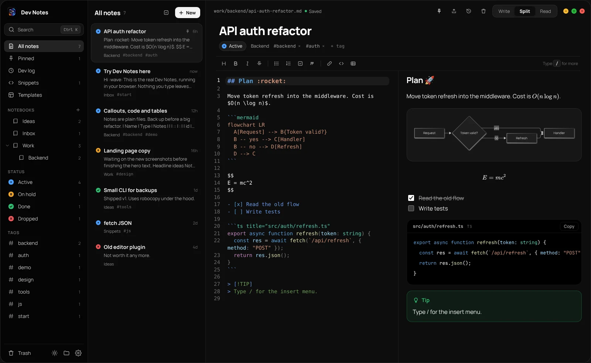
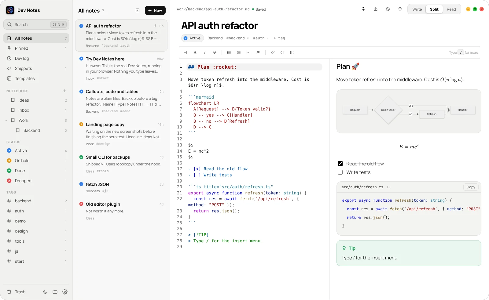
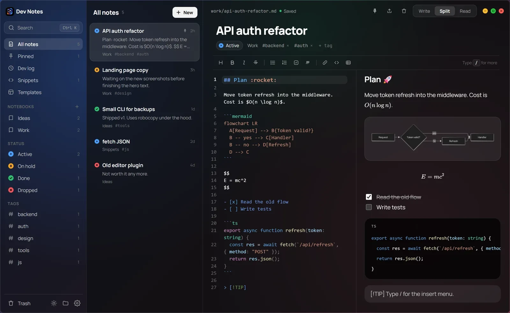
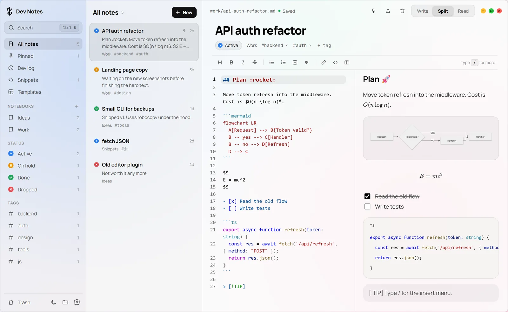

NOTYX
Notes that read like code.
The Markdown notebook for developers. Free for Windows.

This is the real app, running right here. Click a note and start typing.Open this page on a computer to try the real app here.
Markdown on one side. A clean page on the other. Code that colors itself, math, diagrams, and a history of every change. All saved as plain files that belong to you.
Type plain Markdown.
The page builds itself next to it as you go.
Press / for anything.
Tables, checklists, callouts, math and diagrams. Keep typing to filter.
Code that finishes itself.
VS Code colors and suggestions in six languages.
Then just read.
Switch to Read for a clean page, or Write to focus.
Get the highlights.
Small app. Big notebook.
Black, white, or glass.
Four themes. Acrylic lets your wallpaper blur through.



Your notes.
Just files.
Every note is a normal Markdown file in Documents\NOTYX. Open it anywhere. Keep it forever.
No accountWorks offlinePaste imagesArabic & English search
NOTYX. Free.
For Windows 10 and 11. One small installer, no account.
Download for Windowsv0.1.0 · 4.7 MB · English interface
Windows showed a warning?
NOTYX isn't signed with a paid certificate yet, so SmartScreen may stop it the first time.
- Open the downloaded file.
- If you see "Windows protected your PC", click More info.
- Click Run anyway and follow the installer.
- Open NOTYX from the Start menu. Your first notes are waiting in Documents\NOTYX.